A growing movement of grassroots community groups building disaster resilience across the Northern Rivers
Communities know their people, places and strengths. We connect them.

The group made up of groups
Since early 2024, more than 60 groups and organisations across the Northern Rivers have joined together to form the Resilience Alliance, a community-led network focused on collective care, preparedness and regional strength. Tap a town to find it on the map.
Tweed
Byron
Ballina
Lismore
Richmond Valley
Kyogle
Clarence Valley
Towns named in 2022 flood reports by AIDR, Lismore City Council and Risk Frontiers. NRCRA's member list will add every place where Alliance groups work.
Five pillars
- 01

Grow the Alliance
Welcoming more place-based groups so no group works alone.
- 02

Training and resource sharing
Practical tools, templates and learning passed group to group.
- 03

Peer support and self care
Looking after the people who look after their communities.
- 04

Funding and collective projects
Participatory grants and shared projects, decided locally.
- 05
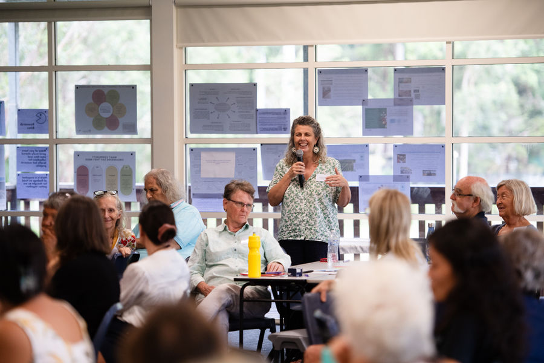
Advocacy
A stronger collective voice in funding, policy and planning.
- 60+
- grassroots groups and organisations
- 7
- local government areas
- 3
- projects under way
- $800,000
- HELP Fund grants program, over two years

Upcoming, projects and the R.A.C.K

27 Nov: Alliance Gathering, Phase 1
Location to be confirmed.

Projects
Three projects growing the Alliance, funding local ideas and learning together. See partners

The R.A.C.K
One shared place where the whole network can find what already works. Explore
Thanks to our partners
Our partners have helped the Alliance grow from one part-time coordinator to a regional team of six, fund Connected and Prepared, bring $800,000 in participatory grants to local groups and keep learning with researchers from the University Centre for Rural Health.
Get involved
Local experience. Shared learning. Wider impact.
Find a group near youJoin the WhatsApp groupEmail the Network Lead
Local experience. Shared learning. Wider impact.
Since early 2024, more than 60 groups and organisations across the Northern Rivers have joined together to form the Resilience Alliance, a community-led network focused on collective care, preparedness and regional strength.
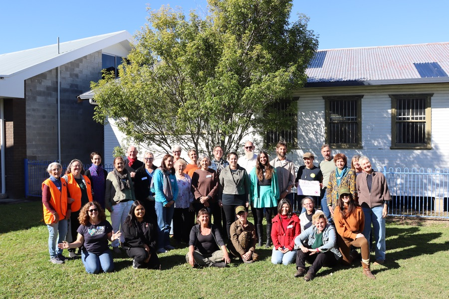
Vision
Connected, collaborative Northern Rivers communities that are empowered to care for themselves and each other before, during and after disasters.
Purpose
To develop a self-sustaining, trusted Alliance of place-based, community-led resilience groups and organisations. The Alliance shares knowledge and resources, provides mutual support and wellbeing, takes collective action and advocates for identified community needs.
Our values
Connect
We connect 60+ community resilience groups across the region so local leaders can find each other, share resources and act together.
Share
We share knowledge, training and practical tools across the network so every community benefits from what others have learned.
Care
We care for the people doing this work: reducing the load on volunteers, removing duplication and supporting community-led resilience.
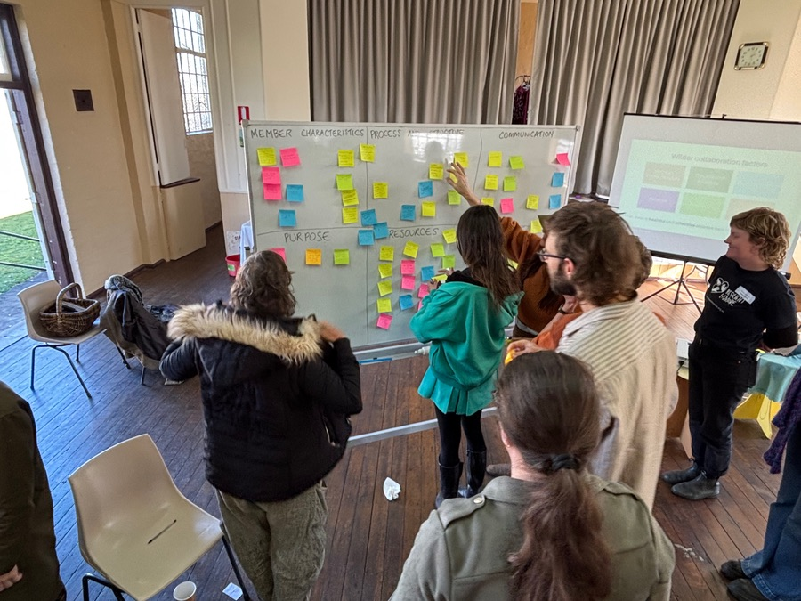


What we are changing
From
- Dependence
- Fragmented organisations
- Competition for funding
- Isolated communities
To
- Cooperation
- Shared knowledge
- Local leadership
- Connected communities
Our journey
- 2022
After the floods and landslides, groups across the Northern Rivers organised locally and connections began to grow. Research found that grassroots groups wanted peer-to-peer support.
- 2024
The Resilience Alliance took shape, with the University Centre for Rural Health (UCRH) as embedded researchers documenting progress along the way.
- 2025
UCRH completed the first Resilience Alliance Health Check and shared findings with groups in the network.
- 2026
Connected and Prepared brings a Monitoring, Evaluation and Learning Framework and Implementation Plan.
- 2027 to 2028
Research and MEAL continue alongside the Alliance as it supports and resources groups in the network.
How we learn
Monitoring, Evaluation, Accountability and Learning, with researchers from the University Centre for Rural Health.
- Connect
- Listen
- Reflect
- Improve
- Share
- Strengthen
“It's cutting edge. I don't really know whether this sort of thing has been tried before, certainly for community disaster response groups.”
Alliance participant

Our structure
Steering committee, UCRH embedded researchers and the Network Lead, Kathie Heyman. Names to be supplied.
Common questions
How is the Alliance different from Community Resilience Networks?
Community Resilience Networks are hosted by councils in each local government area. The Alliance is a region-wide network that sits outside formal structures, a flexible space for independent grassroots groups to share practical solutions and build capacity.
How is the Alliance different from Plan C?
Plan C trains people directly and is one of our valued member organisations. The Alliance is a network of networks: it connects groups, helps them share what they know and gives them a stronger collective voice.
Our partners
Our partners have helped the Alliance grow from one part-time coordinator to a regional team of six, fund Connected and Prepared, bring $800,000 in participatory grants to local groups and keep learning with researchers from the University Centre for Rural Health.


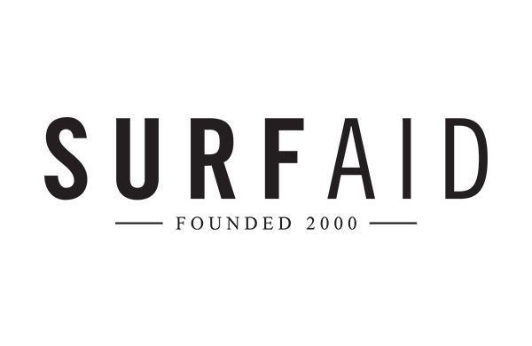
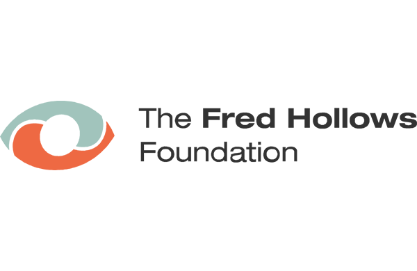
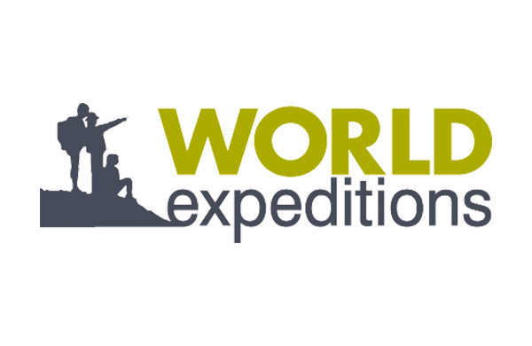
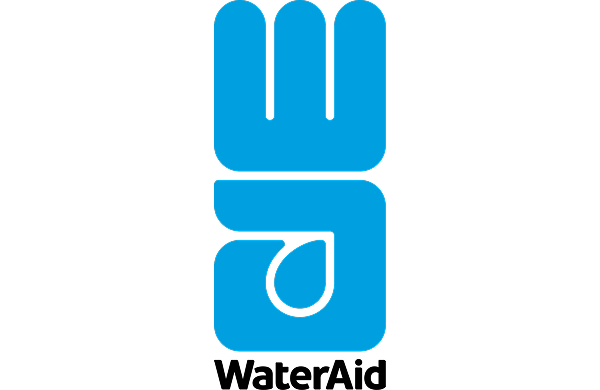
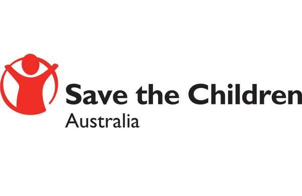
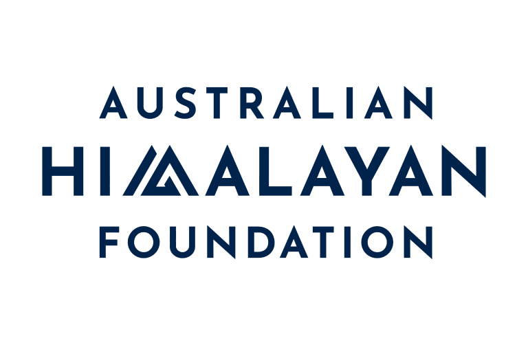
Placeholder logos borrowed from another site to show the layout. Real partners: Disaster Ready Fund, FRRR, NRMA Insurance HELP Fund, NSW Government, Northern Rivers Community Foundation, Resilient Lismore, Plan C, University Centre for Rural Health, Monash University.
60+ grassroots, place-based groups across the Northern Rivers, working across five pillars.
Find the resilience groups connected to the Alliance, by place and by focus.
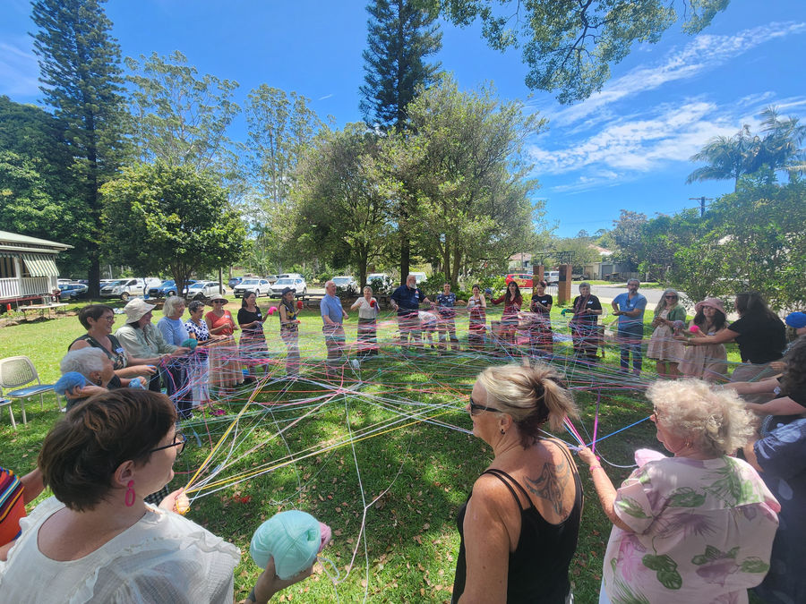
Placeholder map of the region. In the build this is the Alliance's own Google Map, with a pin for each member group.
Five pillars
Each pillar, and the groups in the network working on it.
- 01
Grow the Alliance
Welcoming more place-based groups so no group works alone.
- Sample group AMurwillumbah
- Sample group BKyogle
- Sample group CGrafton
- 02
Training and resource sharing
Practical tools, templates and learning passed group to group.
- Sample group DMullumbimby
- Sample group ELismore
- Sample group FCasino
- 03
Peer support and self care
Looking after the people who look after their communities.
- Sample group GWardell
- Sample group HUki
- Sample group INorth Lismore
- 04
Funding and collective projects
Participatory grants and shared projects, decided locally.
- Sample group JWoodburn
- Sample group KBallina
- Sample group LBillinudgel
- 05
Advocacy
A stronger collective voice in funding, policy and planning.
- Sample group MCoraki
- Sample group NSouth Lismore
- Sample group OTumbulgum
All groups
- Sample group AMurwillumbah, TweedGrow the Alliance
- Sample group BKyogle, KyogleGrow the Alliance
- Sample group CGrafton, Clarence ValleyGrow the Alliance
- Sample group DMullumbimby, ByronTraining and resource sharing
- Sample group ELismore, LismoreTraining and resource sharing
- Sample group FCasino, Richmond ValleyTraining and resource sharing
- Sample group GWardell, BallinaPeer support and self care
- Sample group HUki, TweedPeer support and self care
- Sample group INorth Lismore, LismorePeer support and self care
- Sample group JWoodburn, Richmond ValleyFunding and collective projects
- Sample group KBallina, BallinaFunding and collective projects
- Sample group LBillinudgel, ByronFunding and collective projects
- Sample group MCoraki, Richmond ValleyAdvocacy
- Sample group NSouth Lismore, LismoreAdvocacy
- Sample group OTumbulgum, TweedAdvocacy
No groups match those filters.
Sample groups. Real names and areas come from the Alliance member list.
The R.A.C.K
Resilience Alliance Community Knowledge. One shared place where the whole network can find what already works.
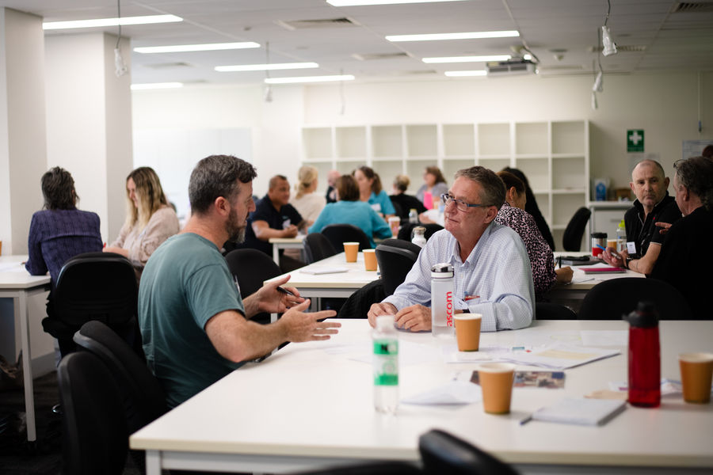
The 5 RACKs
- 13 resources
Get Ready
Plans and checklists for before a disaster.
- 25 resources
Emergency
What to do and who to call when it happens.
- 314 resources
Volunteers
Registering, inducting and looking after volunteers.
- 412 resources
Run Your Group
Governance, templates and running a healthy group.
- 56 resources
Training & Workshops
Workshops and learning for group leaders.
Counts from the R.A.C.K, October 2026.
Funding and grants
The HELP Fund
Participatory grants for local groups.
Establishment grants
$3,000
Resilience action grants
Up to $10,000
Need help getting in?
Access is for Alliance groups. Contact the Network Lead to get set up.
Prototype mock. This stands in for the real R.A.C.K until the live links are supplied. Nothing is sent or stored.
Prototype mock. This stands in for the real R.A.C.K until the live links are supplied. Nothing is sent or stored.
Request access to the R.A.C.K
Access is for Alliance groups. The Network Lead approves new requests.
Already have access? Sign in
Prototype mock. This stands in for the real R.A.C.K until the live links are supplied. Nothing is sent or stored.
Full RACK 40MY RACK 0Ask RACK LIVE
One shared place where the whole network can find what already works.
Years of real community experience across the Northern Rivers. Find templates and guides you can use straight away, and contribute knowledge back in two minutes.
For life-threatening emergencies, call Triple Zero (000) immediately.
Resource categories
| Name | Category | Updated |
|---|---|---|
| Community Emergency Hub Guide | Get Ready | Dec 2025 |
| Volunteer registration form | Volunteers | Sample |
| Inducting volunteers who turn up on the day | Volunteers | Sample |
| Mullumbimby evacuation map | Emergency | Sample |
| Resilience Address Book | Run Your Group | Jan 2026 |
| One Calendar (regional shared calendar) | Run Your Group | Jan 2026 |
| Connecting for Impact, UCRH report | Training & Workshops | Dec 2025 |
| Group governance template | Run Your Group | Sample |